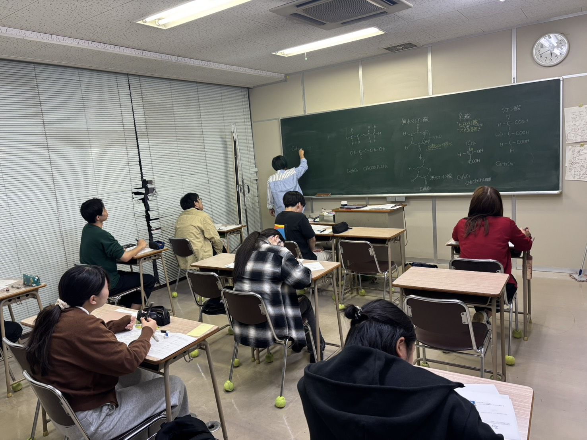
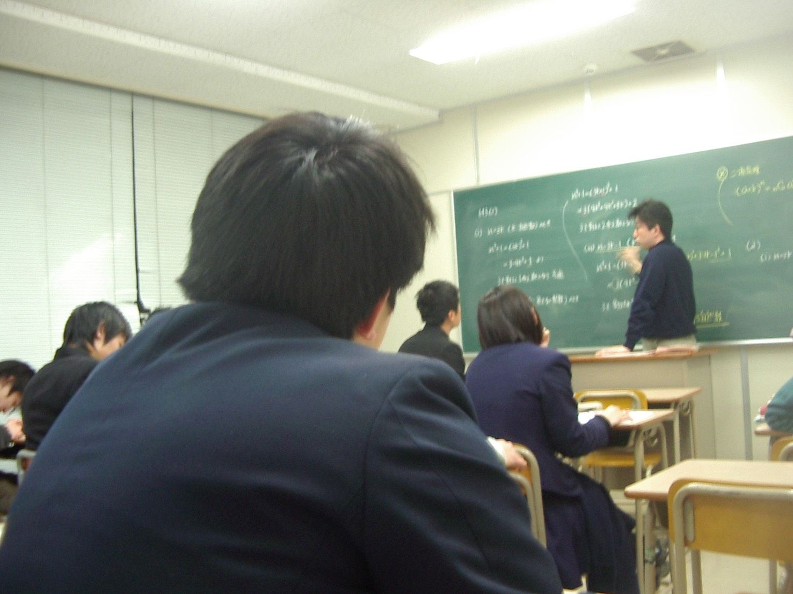
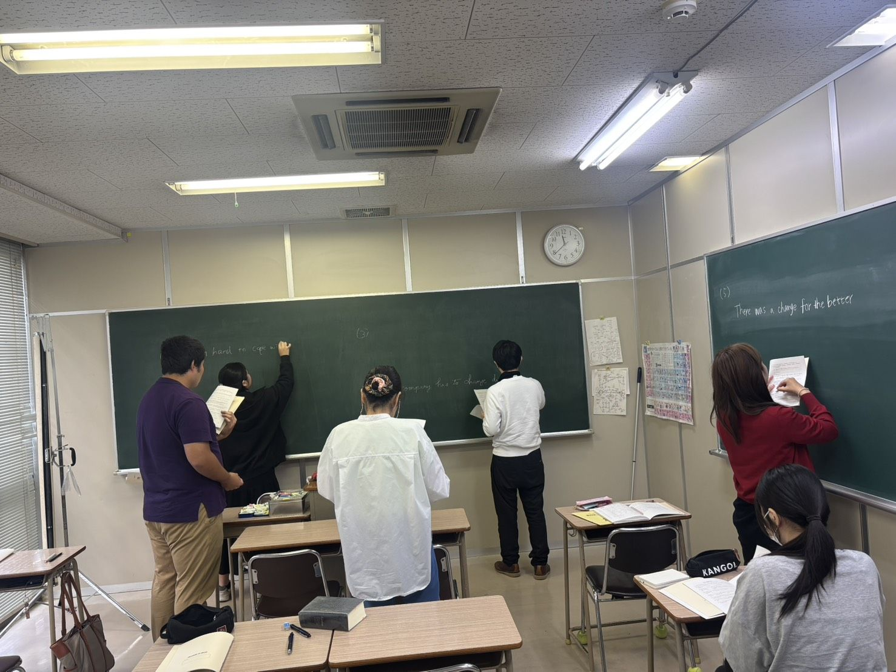
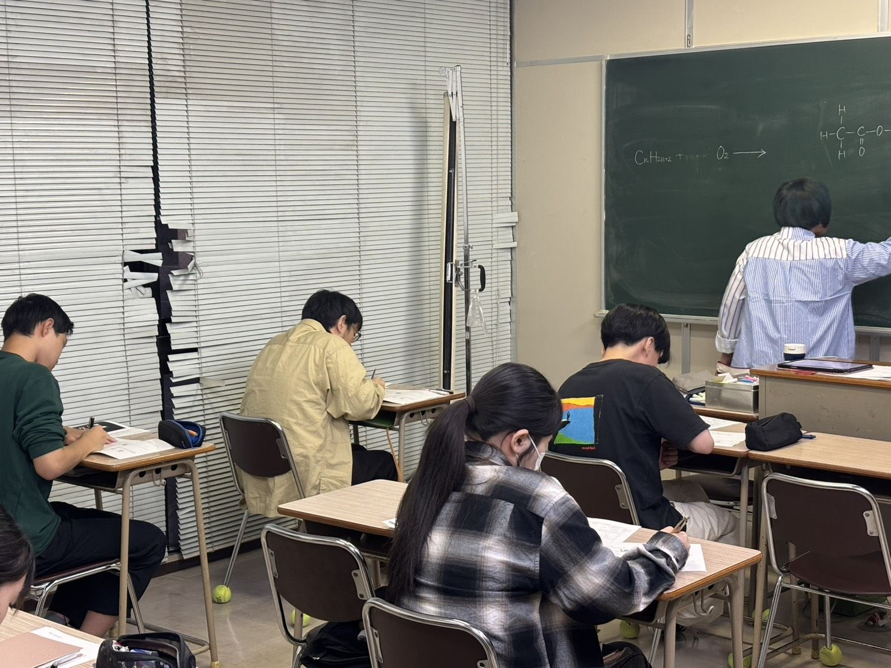
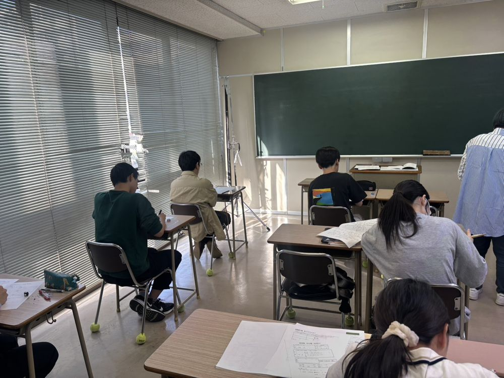
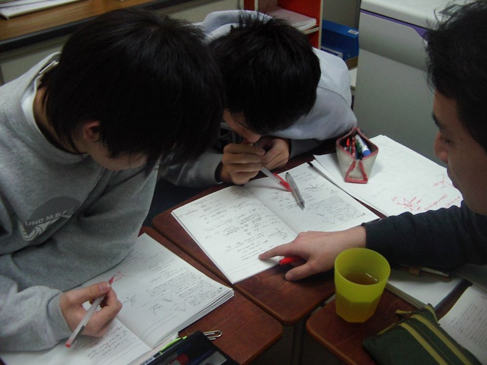
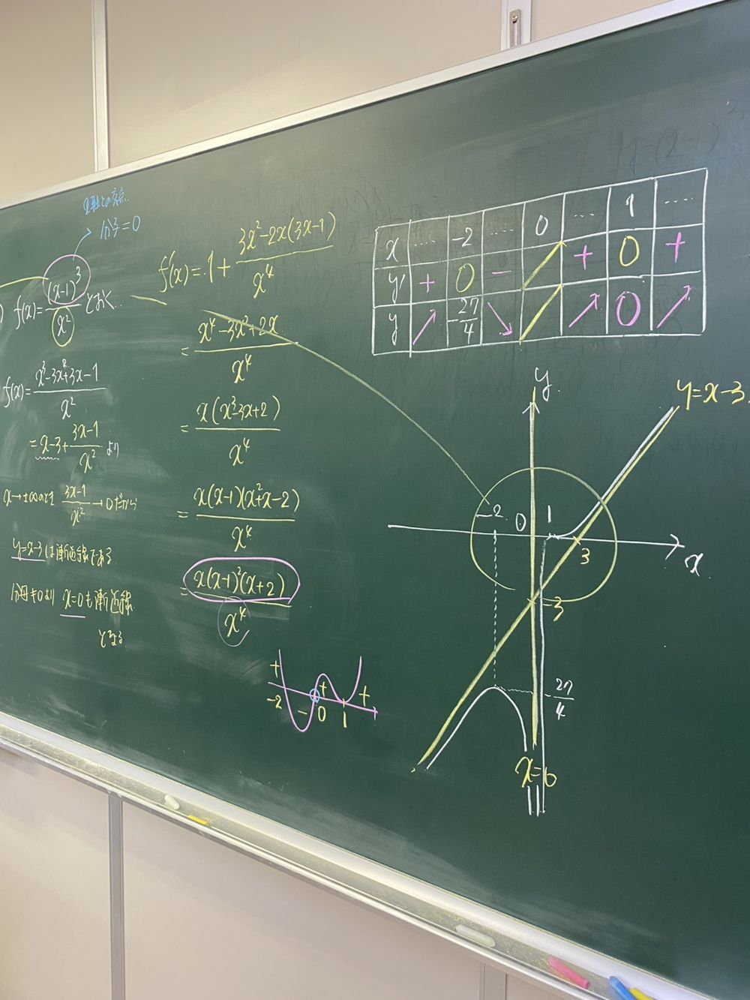

今年度の主な合格
ほか多数。合格者数は［人数を記入］
熊本大学、熊本県立大学、九州大学、大阪大学、広島大学、長崎大学、鹿児島大学、宮崎大学、佐賀大学、高知大学 など
早稲田大学、立命館大学、法政大学、津田塾大学、日本大学、東海大学、西南学院大学、福岡大学、久留米大学、岩手医科大学、東京歯科大学、東京薬科大学、麻布大学、長崎国際大学、崇城大学 など
九州看護福祉大学、熊本保健科学大学、看護専門学校 など
3つの授業スタイルを、目標や時期に合わせて組み合わせられます。

時間割に沿って受講する南城館の基本スタイル。先生との距離が近いので質問もしやすく、映像授業にはない緊張感の中で集中力も身につきます。

定理の意味や「なぜそう考えるのか」を学んだあと、すぐに演習。講師が巡回して一人ひとりの解き方を確認し、本当に使える理解になっているかを見届けます。
さらに深い理解が必要なときに、本人の希望で実施。日程は担当講師と相談して決めます。推薦入試前や二次試験前など、必要な時期に追加できます。
教室に通うのが難しい日や遠方の方も、自宅から南城館の授業を受けられます。少人数ならではの丁寧な指導はそのままに、学ぶ場所の選択肢を広げました。

福岡大学・久留米大学医学部を中心に、志望校に合わせた対策授業を個別に行います。受講前に必ず面談を行い、希望進路と受講科目を確認してから授業を始めます。
お電話またはメールでご連絡ください。受験の相談だけでも大丈夫です。
志望校や今の状況をうかがい、実際の授業を体験していただけます。
受講する授業を決めて開始。年度の途中からでも参加できます。
何から始めればいいかわからない方も、まずは気軽にご相談ください。体験授業や受験の相談も随時受け付けています。